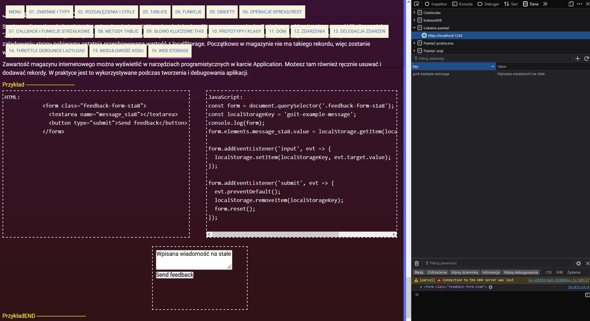

Moduł8 - Zajęcia 16 - Web storage
JSON
JSON (JavaScript Object Notation) to nowoczesny format tekstowy
służący do przechowywania i przekazywania danych obiektowych w
formie tekstowej. Znajomość składnii JSON jest bardzo potrzebna,
ponieważ to właśnie w tym formacie dane będą przesyłane i wysyłane
na serwer, przechowywane w pamięci lokalnej itp.
JSON nie jest obiektem, ale jego reprezentacją w postaci stringa.
Poniżej znajduje się przykładowy plik JSON. Składnia jest podobna do
obiektu, z wyjątkiem tego, że klucze są zawsze stringami w podwójnym
cudzysłowiu. Wartości typu string również muszą być ujęte w podwójny
cudzysłów. Wartości właściwości mogą być jednego z następujących
typów string, number, object, array, boolean i null.
user.json
{
"name": "Josh",
"weight": 175,
"age": 30,
"eyecolor": "brown",
"isHappy": true,
"cars": ["Chevy", "Honda"],
"favoriteBook": {
"title": "The Last Kingdom",
"author": "Bernard Cornwell",
"rating": 8.38
}
}
JavaScript i JSON świetnie ze sobą współdziałają dzięki metodom
wbudowanej klasy JSON, które konwertują obiekty JavaScript na JSON i
odwrotnie. Konwersja w jedną i drugą stronę jest bardzo prosta.
Metoda JSON.stringify()
Pobiera wartość i konwertuje ją na JSON. Wartość może być liczbą,
wartością logiczną, null, tablicą lub obiektem. Stringi są już
poprawnym JSON-em, więc ich konwersja nie ma sensu.
const dog = {
name: "Mango",
age: 3,
isHappy: true,
};
const dogJSON = JSON.stringify(dog);
console.log(dogJSON); // "{"name":"Mango","age":3,"isHappy":true}"
Wynikiem wywołania JSON.stringify(dog) jest prawidłowy JSON
(string), który można zapisać do pliku lub przesłać dalej np. do
serwera.
Nie każdy obiekt JavaScript można przekonwertować jeden do jednego
na JSON. Na przykład, jeśli obiekt ma metody, zostaną one
zignorowane podczas konwersji.
const dog = {
name: "Mango",
age: 3,
isHappy: true,
bark() {
console.log("Woof!");
},
};
const dogJSON = JSON.stringify(dog);
console.log(dogJSON); // "{"name":"Mango","age":3,"isHappy":true}"
Ponadto podczas próby konwersji funkcji do formatu JSON wynik będzie
undefined.
JSON.stringify(() => console.log("Well, this is awkward")); // undefined
Metoda JSON.parse()
Aby uzyskać prawidłową wartość JavaScript z JSON, należy ją
sparsować (parse). Jest to odwrotna operacja konwersji na wiersz
(stringify). Następnie, gdy dog jest już pełnoprawnym obiektem,
możesz z nim pracować jak zwykle.
const json = '{"name":"Mango","age":3,"isHappy":true}';
const dog = JSON.parse(json);
console.log(dog); // {name: "Mango", age: 3, isHappy: true}
console.log(dog.name); // "Mango"
Obsługa błędów
jeśli nieprawidłowy JSON zostanie przekazany do metod klasy JSON, to
wystąpi błąd i cały skrypt się zawiesi. Aby tego uniknąć, używana
jest konstrukcja try...catch, która pozwala "wyłapać" i obsłużyć
błędy wykonania skryptu (nie tylko te wyrzucane przez metody klasy
JSON).
try {
// Code that may throw a runtime error
} catch (error) {
// Error handling
}
- Najpierw wykonywany jest kod wewnątrz bloku try.
-
Jeśli nie ma błędów, blok catch jest ignorowany, a interpreter
idzie dalej.
-
Jeśli w bloku try wystąpi błąd, jego wykonanie zostaje zatrzymane,
a interpreter przejdzie do bloku catch.
Zmienna error to obiekt błędu z informacją o tym, co się stało. Ten
obiekt zazwyczaj ma kilka przydatnych właściwości:
-
name - rodzaj błędu. W przypadku błędu parsowania jest to
SyntaxError.
- message - wiadomość o szczegółach błędu
-
stack - stos wywołań funkcji w momencie wystąpienia błędu. Używany
do debugowania
W poniższym przykładzie parsowanie wiersza doprowadzi do błędu,
ponieważ ciąg znaków nie jest prawidłowym JSON, nie można go
przekonwertować na prawidłową wartość JavaScript.
// Script will crash during parse
const data = JSON.parse("Well, this is awkward");
console.log("❌ You won't see this log");
Używając konstrukcji try...catch możemy obsłużyć ten wyjątek, dzięki
czemu skrypt będzie działał nawet w przypadku błędu.
try {
const data = JSON.parse("Well, this is awkward");
} catch (error) {
console.log(error.name); // "SyntaxError"
console.log(error.message); // Unexpected token W in JSON at position 0
}
console.log("✅ This is fine, we handled parse error in try...catch");
To samo stanie się przy próbie parsowania nieprawidłowego JSON-a,
który na przykład może pochodzić z back-endu lub zostać odczytany z
pliku. W tym przykładzie dla właściwości username brakuje
otaczających podwójnych cudzysłowów
try {
const data = JSON.parse('{username: "Mango"}');
} catch (error) {
console.log(error.name); // "SyntaxError"
console.log(error.message); // "Unexpected token u in JSON at position 1"
}
console.log("✅ This is fine, we handled parse error in try...catch");
Fazy wykonania kodu
W JavaScript kod nie jest wykonywany od razu, silnik najpierw musi
go odczytać i sprawdzić, czy w ogóle można go wykonać.
Faza interpretacji lub oceny (compile time, evaluation time) -
przygotowanie przed wykonaniem kodu, silnik wyszukuje błędy
składniowe itp. Oznacza to, że kod nie jest jeszcze wykonywany, jest
tylko oceniany. Jeśli ta faza się powiedzie, oznacza to
przynajmniej, że w kodzie nie ma błędów składniowych i można go
uruchomić w celu wykonania.
Faza wykonania (runtime) - skrypt rozpoczyna wykonywanie, wykonywane
są instrukcje wywoływania funkcji i obliczania wyrażeń, poszukiwane
są niezbędne identyfikatory w odpowiednich zakresach i tym podobne.
Jeśli ta faza zakończy się pomyślnie, to skrypt został napisany bez
oczywistych błędów i zakończył swoją pracę. Podczas tej fazy mogą
wystąpić błędy związane z brakiem właściwości i zmiennych, konwersją
typów itp., czyli coś, co dzieje się tylko podczas wykonywania kodu
i nie jest możliwe do odnalezienia podczas interpretacji kodu bez
jego wykonania.
Wypróbuj następujący kod. Ponieważ popełniliśmy literówkę i zamiast
const próbujemy zadeklarować zmienną value za pomocą słowa
kluczowego cos, błąd składni zostanie wykryty podczas fazy
kompilacji, a faza wykonywania nawet się nie rozpocznie. W konsoli
od razu zobaczymy komunikat o błędzie.
console.log('This message will not appear in the console');
cos value = 5;
try...catch wyłapuje tylko błędy, które wystąpiły podczas
wykonywania kodu (runtime errors). Oznacza to, że kod nadal musi być
poprawny składniowo, w przeciwnym razie faza wykonania po prostu nie
rozpocznie się. Błędy, które występują w fazie oceny, nazywane są
błędami parsowania.
Magazyn internetowy
Za każdym razem, gdy zmieniasz motyw kolorystyczny z jasnego na
ciemny, oglądasz wideo, dodajesz produkt do koszyka, otwierasz lub
zamykasz pasek boczny, popularne aplikacje internetowe zapamiętują
stan interfejsu i przywracają go przy następnej wizycie.
Domyślnie stan interfejsu jest przechowywany w pamięci zakładki
przeglądarki i jest tracony po zamknięciu aplikacji webowej. Aby
tego uniknąć, musisz przechowywać dane o stanie interfejsu gdzieś
indziej, pomiędzy wizytami na stronie. Z pomocą przychodzi
przechowywanie informacji o stanie aplikacji webowej na komputerze
użytkownika. Pozwala to zapisywać informacje o sesjach użytkownika
bez udział backendu, logowania itd.
Web Storage API
Magazyn internetowy składa się z magazynu lokalnego (localStorage) i
magazynu sesji (sessionStorage). Zapewnia sposób przechowywania
danych w dosyć intuicyjny sposób, mianowicie w postaci par
klucz:wartość. Z technicznego punktu widzenia w magazynie
internetowym można zapisywać tylko strings, ale nie stanowi to
problemu, jeśli używasz metod klasy JSON do konwersji typów
złożonych na wiersze. Nie ma sensu zapisywać metod obiektowych czy
funkcji, wystarczą nam same dane.
Magazyn lokalny (localStorage) jest unikalny dla każdej aplikacji
internetowej i będzie taki sam we wszystkich zakładkach, na których
jest uruchomiony (aplikacja internetowa). Dane w magazynie lokalnym
nie są usuwane nawet po zamknięciu przeglądarki lub wyłączeniu
komputera. Aby je usunąć, możesz użyć JavaScript, użytkownik może
również wyczyścić je wraz z historią przeglądarki (ale nie dzieje
się to automatycznie).
Magazyn sesji (sessionStorage) jest podobny do magazynu lokalnego,
jest również unikalny dla każdej aplikacji internetowej, ale czas
przechowywanych danych jest ograniczony przez sesję karty
przeglądarki. Gdy tylko użytkownik zamknie kartę lub przeglądarkę,
dane są usuwane. Z uwagi na to, w praktyce magazyn sesji jest
używany znacznie rzadziej.
Magazyn internetowy nie powinien przechowywać haseł, numerów kart
kredytowych i podobnych zastrzeżonych informacji. Jeśli złośliwy
skrypt uzyska dostęp do strony internetowej, bez problemu odczytałby
te dane.
Magazyn lokalny
Umożliwia przechowywanie niewygasających danych w formacie par
klucz:wartość na komputerze użytkownika i odczytywanie ich podczas
ponownego odwiedzania strony. Magazyn lokalny i magazyn sesji są
częścią przeglądarki, więc są dostępne jako właściwości obiektu
window, mają ten sam zestaw właściwości i metod, a różnią się tylko
"ulotnością" danych.
-
setItem(key, value) - tworzy nowy lub aktualizuje istniejący
rekord w magazynie.
- getItem(key) - zwraca wartość z kluczem key z magazynu.
- removeItem(key) - usuwa rekord z kluczem key z magazynu.
- clear() - całkowicie czyści wszystkie rekordy w magazynie.
- length - przechowuje liczbę rekordów w magazynie.
Przechowywanie
Używając metody setItem(key, value), możesz dodać nowy wpis jako
parę klucz:wartość.
localStorage.setItem("ui-theme", "light");
localStorage.setItem("sidebar", "expanded");
localStorage.setItem("notification-level", "mute");
Jeśli chcesz przechowywać coś innego niż string, na przykład tablicę
lub obiekt, musisz przekonwertować go na string za pomocą metody
JSON.stringify().
const settings = {
theme: "dark",
isAuthenticated: true,
options: [1, 2, 3],
};
localStorage.setItem("settings", JSON.stringify(settings));
Odczytywanie
Metoda getItem(key) pozwala na odczytanie z magazynu wpisu pod
kluczem key. Jeśli w magazynie nie ma wpisu z takim kluczem, metoda
zwraca null. Gdy wartość jest zwykłym ciągiem, nie ma potrzeby go
parsować.
localStorage.setItem("ui-theme", "dark");
const theme = localStorage.getItem("ui-theme");
console.log(theme); // "dark"
W przeciwnym razie musisz sparsować wartość za pomocą metody
JSON.parse(), aby uzyskać prawidłowe dane.
const settings = {
theme: "dark",
isAuthenticated: true,
options: [1, 2, 3],
};
localStorage.setItem("settings", JSON.stringify(settings));
const savedSettings = localStorage.getItem("settings");
const parsedSettings = JSON.parse(savedSettings);
console.log(parsedSettings); // settings object
Nie zapomnij używać konstrukcji try...catch z metodą JSON.parse(),
aby uniknąć "zawieszenia" skryptu, jeśli spróbujesz odczytać
nieprawidłowy JSON.
Usuwanie
Metoda removeItem(key) usuwa istniejący wpis z kluczem key z
magazynu.
localStorage.setItem("ui-theme", "dark");
console.log(localStorage.getItem("ui-theme")); // "dark"
localStorage.removeItem("ui-theme");
console.log(localStorage.getItem("ui-theme")); // null
Czyszczenie magazynu
Operacja całkowitego oczyszczenia magazynu jest niebezpieczna,
ponieważ może wpłynąć na wpisy dokonane przez innych deweloperów
projektu. Jeśli jednak jesteś pewny i chcesz całkowicie wyczyścić
magazyn, wywołaj metodę clear().
localStorage.setItem("ui-theme", "light");
localStorage.setItem("sidebar", "expanded");
localStorage.setItem("notification-level", "mute");
console.log(localStorage.getItem("ui-theme")); // "light"
console.log(localStorage.getItem("sidebar")); // "expanded"
console.log(localStorage.getItem("notification-level")); // "mute"
localStorage.clear();
console.log(localStorage.getItem("ui-theme")); // null
console.log(localStorage.getItem("sidebar")); // null
console.log(localStorage.getItem("notification-level")); // null
Jak zapisać wiadomość
Stwórzmy formularz, który służy do wpisania wiadomości i zapisania
jej w localStorage po przesłaniu. Zmień wartość pola tekstowego i
kliknij przycisk "Zapisz". Tekst w polu wyjściowym zmieni się na
wprowadzony. Odśwież stronę, a zobaczysz ten sam tekst, chociaż
jeszcze nic nie wpisałeś. Po załadowaniu strony pobieramy ostatnią
przechowywaną wartość z localStorage. Początkowo w magazynie nie ma
takiego rekordu, więc zostanie wyświetlony pusty ciąg.
Zawartość magazynu internetowego można wyświetlić w narzędziach
programistycznych w karcie Application. Możesz tam również ręcznie
usuwać i dodawać rekordy. W praktyce jest to wykorzystywane podczas
tworzenia i debugowania aplikacji.
Przykład -------------------------------
JavaScript:
const form = document.querySelector('.feedback-form-s1a8');
const localStorageKey = 'goit-example-message';
console.log(form);
form.elements.message_s1a8.value =
localStorage.getItem(localStorageKey) ?? '';
form.addEventListener('input', evt => {
localStorage.setItem(localStorageKey, evt.target.value);
});
form.addEventListener('submit', evt => {
evt.preventDefault();
localStorage.removeItem(localStorageKey);
form.reset();
});
PrzykładEND -------------------------------
Zawartość magazynu internetowego można wyświetlić w narzędziach
programistycznych na karcie Application. Możesz tam również ręcznie
usuwać i dodawać rekordy. W praktyce jest to wykorzystywane podczas
tworzenia i debugowania aplikacji.

Usługa dla localStorage
Aby zmniejszyć ilość powtarzającego się kodu podczas pracy z
magazynem internetowym, możesz napisać usługę ze standardowymi
metodami, na przykład save i load. Będą abstrahować one od
powtarzającego się kodu sprawdzania błędów parsowania i tym
podobnych.
Przykład -------------------------------
storage.js
const save = (key, value) => {
try {
const serializedState = JSON.stringify(value);
localStorage.setItem(key, serializedState);
} catch (error) {
console.error("Set state error: ", error.message);
}
};
const load = key => {
try {
const serializedState = localStorage.getItem(key);
return serializedState === null ? undefined : JSON.parse(serializedState);
} catch (error) {
console.error("Get state error: ", error.message);
}
};
export default {
save,
load,
};
PrzykładEND -------------------------------
Możemy teraz bezpiecznie dodawać i odczytywać rekordy z lokalnego
magazynu. Spróbuj samodzielnie dodać metodę remove(key), która usuwa
bezpiecznie wpis, w podobny sposób jak napisaliśmy load(key) i
save(key, value).